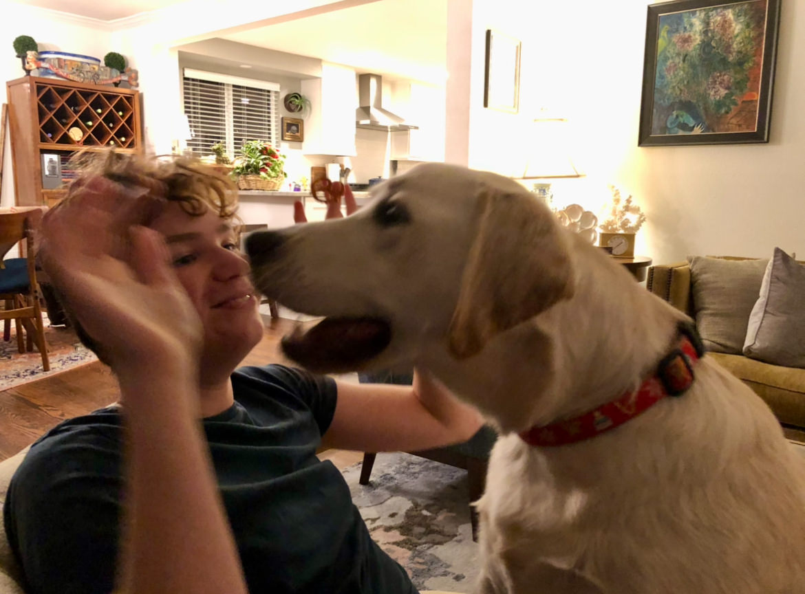

This page says a bit more about me.
Back to markdown page!When I am not studying or working, I like playing different instruments, swimming or running, and hiking with friends.
These are my favorite instruments to play:
I also love hanging out with my dog, Brody.
While there are valid arguments against AI, I'm a frequent ChatGPT user (only in academically acceptable contexts).
I like to listen to a lot of music. This table lists some of my favorite albums:
| Album | Band |
|---|---|
| OK Computer | Radiohead |
| either/or | Elliott Smith |
| Is This It | The Strokes |
| In Rainbows | Radiohead |